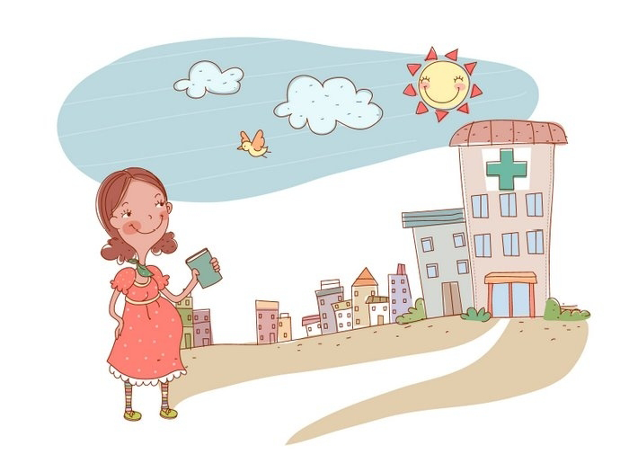

5 неделя беременности
Маленькое сердечко твоего ребенка уже бьется!
К этому моменту ваш ребенок состоит из миллионов клеток, которые непрерывно делятся, формируя сложные системы его развивающегося организма. У вашего малыша уже сейчас имеется двухкамерное сердце, которое, по сути, представляет собой изогнутую трубку. В это трудно поверить, но оно уже бьется!
Уже начали формироваться зачатки позвоночника, а также скелетные структуры ребенка. Крохотные глаза и уши также формируются. Сейчас вы, скорее всего, не узнаете своего ребенка, поскольку он напоминает головастика, креветку. Размер малыша примерно 2 мм. Внутри вашей теплой и надежно защищенной матки сердце малыша бьется спокойно.
Начинает формироваться нервная трубка – прообраз будущей центральной нервной системы. Нервная трубка имеет утолщение, которое будет формироваться в самый сложный орган на планете – головной мозг.
Формируются такие органы, как печень, почки и надпочечники, щитовидная железа, поджелудочная железа. Так щитовидная железа уже на этой неделе начинает синтезировать гормон тиреоглобулин, являющийся маркером рецидива высокодифференцированных злокачественных новообразований щитовидной железы и используемый для контроля лечения этих заболеваний.
УЗИ на 5 неделе беременности
Советы
- Начните принимать поливитаминный комплекс для беременных. Выбрать подходящий вам поможет врач акушер-гинеколог.
- Если у вас тошнота или даже рвота, постарайтесь облегчить свое состояние. Завтракайте лежа в постели, употребляйте пищу в охлажденном виде до 5-6 раз в день небольшими порциями. Если какие-то продукты провоцируют приступы тошноты, временно откажитесь от них. Для облегчения неприятных ощущений можно пить морс, кислые свежевыжатые соки.
- Если рвота возникает чаще 2-3 раз в день, обратитесь к врачу.
- При появлении болей внизу живота, а тем более кровянистых выделений из половых путей, необходимо как можно скорее обратиться к акушеру-гинекологу. Если боли сильные, не стоит геройствовать и добираться до женской консультации самостоятельно – вызывайте скорую помощь! Не исключено, что возникла угроза прерывания беременности, начался выкидыш или это внематочная беременность.
- При дискомфортных ощущениях в молочных железах проведите ревизию нижнего белья и перейдите на бюстгальтеры из натуральных материалов.
- Старайтесь избегать запахов, к которым у вас появилось отвращение. Если вас раздражают ароматы готовящейся пищи, то временно ограничьте свое пребывание на кухне: пусть еду готовит кто-нибудь из близких.
ВАШ ОРГАНИЗМ
Если этого еще не случилось, в настоящий момент возможно появление утренней тошноты. Хотя это называют «утренней тошнотой», симптомы могут проявиться в любое время дня и даже ночи. Ваша матка увеличивается в размерах, давя на мочевой пузырь и заставляя вас чаще ходить в туалет. Пока она имеет вытянутую ассиметричную (в зависимости от места прикрепления плодного яйца) форму, но начиная увеличиваться в размерах, постепенно приобретает округлую форму. В своих размерах матка уже увеличилась до того состояния, когда квалифицированный врач гинеколог может определить наличие или отсутствие беременности.
Болезненная чувствительность груди повышается вместе с увеличением в размерах молочных желез. По ощущениям беременная на пятой неделе женщина может испытывать противоречивые чувства, сменяющие друг друга: радость и печаль, спокойствие и раздраженность.
Чаще всего отмечается повышенная утомляемость, сонливость, разбитость, частая смена настроения и вкусовых привычек. Женщине даже может казаться что она заболевает и температура тела вот-вот повысится, или даже немного повысилась.
Внутриутробное развитие эмбриона на 5 неделе беременности
ЗДОРОВЫЕ СОВЕТЫ
На 5 неделе беременности необходимо отказаться от всех пищевых добавок и особенно сахарозаменителей. Если вы еще не посетили врача, обязательно сделайте это (перед походом к врачу следует вспомнить точную дату начала последних месячных). Если у вас появились ранее перечисленные симптомы (тошнота, рвота, слабость и др.), то крепитесь, к 12 неделе они должны исчезнуть. Если признаки раннего токсикоза нарастают и мучают вас, необходима консультация врача, но ни в коем случае не употребляйте лекарственные средства самостоятельно.
Помните, что сейчас у вас первый триместр беременности, а он очень коварен ранними выкидышами, поэтому берегите свое здоровье. Избегайте переохлаждения и перегревания.
Соблюдайте режим труда и отдыха.
Если страдаете от чрезмерной утомляемости, попросите партнера помочь вам с домашними делами.
Если у вас имеется тяга к еде и объект ваших желаний не является пищей для вас или для малыша, старайтесь свести к минимуму ее потребление. Важно получать с пищей питательные вещества в достаточном количестве, чтобы обеспечить здоровое развитие вашего ребенка. Вы в процессе творения новой жизни, поэтому постарайтесь дать малышу наилучшее возможное начало, используя здоровый рацион. Отличное здоровья зачастую помогает легче перенести роды (хотя относительно родов что-либо легкое представить трудно).
4 неделя 6 неделя